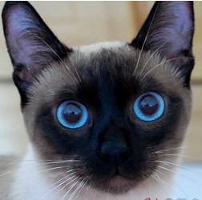

美国CFA标准的猫有多少
2016-3-15 10:57| 发布者: 绿野仙踪| 查看: 499| 评论: 0
CFA（The Cat Fanciers’ Association），是国际爱猫联合会的简称，是一个于美国登记的非盈利性团体，成立于1906年初。 起初，CFA只是一个很小的组织，CFA成为全球拥有最多注册纯种猫的机构，每年在世界各地举办的猫展有400多次，参展猫的品种也多达42种。
在CFA成立的百多年来，只有42种血统猫得到了认证，成为CFA认证的血统猫。
CFA认证的42种血统猫包括：
ABYSSINIAN 阿比西尼亚猫
AMERICAN BOBTAIL 美国短尾猫
AMERICAN CURL 美国卷耳猫
AMERICAN SHORTHAIR 美国短毛猫
AMERICAN WIREHAIR 美国硬毛猫
BALINES 巴厘猫
BIRMAN 伯曼猫
BOMBAY孟买猫
BRITISH SHORTHAIR 英国短毛猫
BURMESE 缅甸猫
CHARTREUX 夏特尔猫
CHINESE LI HUA 中国狸花猫
COLORPOINT SHORTHAIR 重点色短毛猫
CORNISH REX 柯尼斯卷毛猫
DEVON REX 德文卷毛
EGYPTIAN MAU 埃及猫
EUROPEAN BURMESE 欧洲缅甸猫
EXOTIC 异国短毛猫
HAVANA BROWN 哈瓦那褐猫
JAPANESE BOBTAIL 日本短尾猫
JAVANESE 爪哇猫
AMERICAN BOBTAIL 美国短尾猫
AMERICAN CURL 美国卷耳猫
AMERICAN SHORTHAIR 美国短毛猫
AMERICAN WIREHAIR 美国硬毛猫
BALINES 巴厘猫
BIRMAN 伯曼猫
BOMBAY孟买猫
BRITISH SHORTHAIR 英国短毛猫
BURMESE 缅甸猫
CHARTREUX 夏特尔猫
CHINESE LI HUA 中国狸花猫
COLORPOINT SHORTHAIR 重点色短毛猫
CORNISH REX 柯尼斯卷毛猫
DEVON REX 德文卷毛
EGYPTIAN MAU 埃及猫
EUROPEAN BURMESE 欧洲缅甸猫
EXOTIC 异国短毛猫
HAVANA BROWN 哈瓦那褐猫
JAPANESE BOBTAIL 日本短尾猫
JAVANESE 爪哇猫
KORAT 科拉特猫
LAPERM 拉邦猫
MAINE COON 缅因浣熊猫
MANX 马恩岛猫
NORWEGIAN FOREST CAT 挪威森林猫
OCICAT 奥西豹猫
ORIENTAL 东方短毛猫
TURKISH VAN 土耳其梵猫
RAGAMUFFIN 褴褛猫
RAGDOLL 布偶猫
RUSSIAN BLUE 俄罗斯蓝猫
SCOTTISH FOLD 苏格兰折耳猫
SELKIRK REX 塞尔卷毛猫
SIAMESE 暹罗猫
SIBERIAN 西伯利亚猫
SINGAPURA 新加坡猫
SOMALI 索马里猫
SPHYNX 加拿大无毛猫
TONKINESE 东奇尼猫
TURKISH ANGORA 土耳其安哥拉猫
PERSIAN (including HIMALAYAN)
波斯猫（包括喜马拉雅猫）
LAPERM 拉邦猫
MAINE COON 缅因浣熊猫
MANX 马恩岛猫
NORWEGIAN FOREST CAT 挪威森林猫
OCICAT 奥西豹猫
ORIENTAL 东方短毛猫
TURKISH VAN 土耳其梵猫
RAGAMUFFIN 褴褛猫
RAGDOLL 布偶猫
RUSSIAN BLUE 俄罗斯蓝猫
SCOTTISH FOLD 苏格兰折耳猫
SELKIRK REX 塞尔卷毛猫
SIAMESE 暹罗猫
SIBERIAN 西伯利亚猫
SINGAPURA 新加坡猫
SOMALI 索马里猫
SPHYNX 加拿大无毛猫
TONKINESE 东奇尼猫
TURKISH ANGORA 土耳其安哥拉猫
PERSIAN (including HIMALAYAN)
波斯猫（包括喜马拉雅猫）
以下来介绍几组可爱的猫咪图吧
- 
- 陷落猫，脸颊非常瘦，双眼澄清，分宝蓝色和浅绿色两种色彩。
- 波斯猫,如优雅的萌妹子，神秘而可爱！
- 英国短毛猫,圆圆的，粗粗的，萌萌的，圆头圆脑，聪明伶俐！
- 俄罗斯蓝猫,萌之中带着贵族气息，好像很多爱猫人士都养过！
- 中国狸花猫，敏感，勇敢，灵活而对主人忠心不二的猫种，独立。
- 阿比西尼亚猫,有着楔形的脸蛋、大而尖的耳朵、呈杏仁状的双眼。
.jpg)